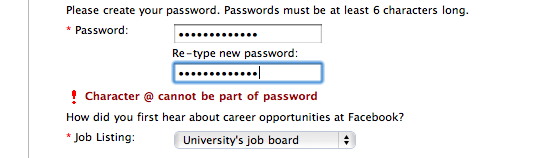
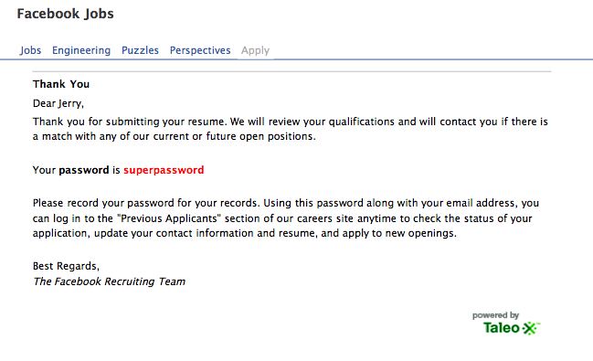

Infuriating Job Applications
Vote on HN TweetSpring is in the air, but instead of allergies, I'm seeing my peers being hit hard by job anxieties. Thanks to this gloomy weather, I've been on top of my job applications. That isn't to say that every day has been a merry job hunt. Normally I would've just let the small things slide, but it's time to be more frank. When companies come to a career fair, they have just as much at stake as the people they're hiring. What surprises me is how oblivious certain companies are to how they're damaging their own reputation. Here's a rundown of what can use improvement.
Lack of Enthusiathism
I understand that being a recuiter is difficult. You have to talk all day, have good candidates and bad, and repeat the same elevator pitch and answer the same questions. It sucks. I understand that. But showing fatigue and lack of interest isn't the way to go. People are watching, and you're representing your company. Show some enthusiam!
On the polar opposite are the recruiters who are too grabby. I'd much rather see this than the former, but this can also get annoying. If you can sense that candidate you're talking to isn't interested, or wouldn't be a great match for your company, why waste the opportunity to meet the eager guy waiting to talk to you?
Two Faced Tactics
Give the same spiel to everyone and make everyone comfortable. The day's hectic enough as it is without extra misinformation. It doesn't help if you tell different stories to different people. I noticed a few companies brought along recruiters who had only just started. When I'd ask them questions, sometimes they would answer differently than their coworkers, or not be able to answer at all.
Outsourcing your Hiring
I think outsourcing's a fantastic idea. The company saves time and money and can focus on their business and products. But for pete's sake, check on who you're outsourcing to see if they're doing a good job! I think both Facebook and Garmin dropped the ball on this one by using Taleo. I'm not sure who to point fingers at, but the problems I saw with the application submission was laughably bad.
Garmin
- The job application site didn't render properly in non-IE browsers.
- The site looked like sh*t in IE.
- The site would break randomly and scroll the page funny at times.
- The site REQUIRED my FULL NAME and SOCIAL SECURITY NUMBER in order to submit my application. What's worse, it didn't even use SSL. Yep, guess what, my SSN is 111-11-1111.
A badly attached resume gives me a cryptic corrupt error message without any gesture to try again or remedy the problem.
The password they ask for doesn't allow '@'. Why is this?

- The password I enter is stored in PLAINTEXT. Thankfully, I've learned to set a initial dummy password to ensure a site at least hashes my password before I submit a legit password. superpassword for the win!

The Pros
Ratting on recuiters isn't very nice. I understand they have it hard too. I really do appreciate the little things and I definitely do remember these impressions when I go home to follow up. It was nice that the Oracle recruiter remembered me and made some small talk with me even though I already saw her a couple weeks ago. It's nice to be contacted within the time a recruiter says.